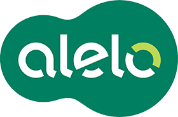

<mat-toolbar class="mat-elevation-z8">
    <button mat-icon-button *ngIf="sidenav.mode === 'over'" (click)="sidenav.toggle()">
        <mat-icon *ngIf="!sidenav.opened">
            menu
        </mat-icon>
        <mat-icon *ngIf="sidenav.opened">
            close
        </mat-icon>
    </button> Alelo Vehicle Management
</mat-toolbar>

<mat-sidenav-container>
    <mat-sidenav #sidenav="matSidenav" class="mat-elevation-z8">

        

        <h4 class="logo-name">Alelo Frota</h4>

        <mat-divider></mat-divider>

        <button mat-button class="menu-button" routerLink="/dashboard">
            <mat-icon>dashboard</mat-icon>
            <span>Dashboard</span>
        </button>
        <button mat-button class="menu-button" routerLink="/vehicle">
            <mat-icon>directions_car</mat-icon>
            <span>Vehicle</span>
        </button>
        <button mat-button class="menu-button" routerLink="/reports">
            <mat-icon>description</mat-icon>
            <span>Reports</span>
        </button>

    </mat-sidenav>
    <mat-sidenav-content>
        <div class="content mat-elevation-z8">
            <router-outlet></router-outlet>
        </div>
    </mat-sidenav-content>
</mat-sidenav-container>